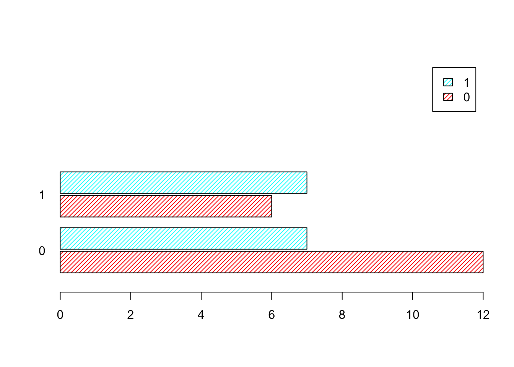

#频数直方图
hist(mtcars$mpg)
本节介绍R中基础的图形工具，即不需要安装和加载扩展包即可实现的图形工具。
本节使用R自带的数据mtcars
#频数直方图
hist(mtcars$mpg)
#查看mpg的最小值和最大值
min(mtcars$mpg)[1] 10.4max(mtcars$mpg)[1] 33.9#breaks=设置分组边界，第1组的下限要小于最小值，最后一组的上限要大于最大值。
#c()生成向量
hist(mtcars$mpg, ylim=c(0,15), xlim=c(10, 35),
breaks=c(10,15,20,25,30,35),col=4)#seq(起点，终点，步长)生成等差序列，作为各组的边界
hist(mtcars$mpg, prob=T, ylim=c(0,0.12), xlim=c(10, 35),
breaks=seq(from=10, to=34, by=3),col=5)#设定组数 breaks=num
#若R认为指定的组数的分组效果不佳，R会自动调整一个更适宜的组数。
#指定分10组，组距为2.4；分12组，组距为2，是整数，分组区间更加适宜阅读。
#R认为分12组更好，所以没有用“breaks= 10”.
hist(mtcars$mpg, ylim=c(0,10), xlim=c(10,35),breaks=10,col=3)#设定组数为5， breaks=5
hist(mtcars$mpg, ylim=c(0,10), xlim=c(10,35),breaks=5,col=2)#指定分组边界 breaks=seq(起点，终点，步长)
hist(mtcars$mpg, ylim=c(0,10), xlim=c(10,35),
breaks=seq(10,34,2.4),col=5)#添加图形标题 main="",坐标轴标题 xlab="", ylab=""
hist(mtcars$mpg, ylim=c(0,8), xlim=c(10, 35),
breaks=seq(10,34,3), main="Histogram of Mpg",
xlab="Miles per Gallon", ylab="Frequency")#坐标轴刻度水平放置 las=1
hist(mtcars$mpg, ylim=c(0,10), xlim=c(10, 35),
breaks=seq(10,34,3), main="Histogram of Mpg",
xlab="Miles per Gallon", ylab="Frequency", las=1,,col=3)#设置直方图填充色
hist(mtcars$mpg,las=1,col=5)hist(mtcars$mpg,las=1,col="deepskyblue")#col=中设置三种颜色，循环出现
hist(mtcars$mpg,las=1,col=c(4,3,2))#绘制频率直方图，纵轴代表概率，增加参数项prob=T
hist(mtcars$mpg, prob=T, ylim=c(0,0.12), xlim=c(10, 35),col=2)#绘制频率直方图，增加参数项freq=FALSE 或者 prob=T
hist(mtcars$mpg, freq=FALSE, ylim=c(0,0.12),col=3)hist(mtcars$mpg, freq=F, ylim=c(0,0.12),col=4)hist(mtcars$mpg, prob=T,ylim = c(0,0.10),las=1,xlab = "MPG",col=5)
#在频率直方图上添加概率密度曲线
lines(density(mtcars$mpg),col=2,lwd=3)par(mfrow=c(1,2)) #设置图形布局1行2列
hist(mtcars$mpg[mtcars$vs== 0],las=1,col=5,breaks = 5,
xlab="v-shaped",main="Histogram of Mpg",
xlim=c(10,35),ylim = c(0,12))
hist(mtcars$mpg[mtcars$vs== 1],las=1,col=5,
xlab="straight",main="Histogram of Mpg",
xlim=c(10,35),ylim = c(0,12))#另一种写法
attach(mtcars) #锁定数据集
hist(mpg[vs== 0],las=1,col=5,breaks = 5,
xlab="v-shaped",main="Histogram of Mpg",
xlim=c(10,35),ylim = c(0,12))table(cyl)cyl
4 6 8
11 7 14 par(mfrow=c(1,3)) #设置图形布局1行3列
hist(mpg[cyl==4],las=1,col=5,breaks = seq(10,35,5),
xlab="4 cylinders",main="Histogram of Mpg",
xlim=c(10,35),ylim = c(0,8))
hist(mpg[cyl==6],las=1,col=5,breaks = seq(10,35,5),
xlab="6 cylinders",main="Histogram of Mpg",
xlim=c(10,35),ylim = c(0,8))
hist(mpg[cyl==8],las=1,col=5,breaks = seq(10,35,5),
xlab="8 cylinders",main="Histogram of Mpg",
xlim=c(10,35),ylim = c(0,8))#箱线图
boxplot(mpg,main="Boxplot of Mpg", las=1,col=4)#满足vs==1条件的画箱线图
boxplot(mpg[vs==1],ylim=c(15,40),main="Boxplot of Mpg", las=1,col=5)#满足vs==0条件的画箱线图
boxplot(mpg[vs==0],main="Boxplot of Mpg", las=1,col=4)#按am分组后，绘制分组箱线图
boxplot(mpg~am,main="Boxplot of Mpg", las=1,col=5)#按vs,am分成四组后，绘制分组箱线图，设置箱体颜色，col=
boxplot(mpg~vs*am,las=2,col=c(6,5,4,3))
#legend()设置图例,"topleft"图例位置，legend=c()图例文本，fill=图例方格填充颜色，cex=图例大小缩放比例，bty = "n"图例无矩形框
legend("topleft",legend=c("v-shaped & automatic","straight & automatic","v-shaped & manual","straight & manual"),
fill = c(6,5,4,3),cex=0.8,bty = "n")#注意茎叶图中报告的“the decimal point is ....”小数点的位置
stem(mpg)
The decimal point is at the |
10 | 44
12 | 3
14 | 3702258
16 | 438
18 | 17227
20 | 00445
22 | 88
24 | 4
26 | 03
28 |
30 | 44
32 | 49sort(disp) [1] 71.1 75.7 78.7 79.0 95.1 108.0 120.1 120.3 121.0 140.8 145.0 146.7
[13] 160.0 160.0 167.6 167.6 225.0 258.0 275.8 275.8 275.8 301.0 304.0 318.0
[25] 350.0 351.0 360.0 360.0 400.0 440.0 460.0 472.0stem(disp)
The decimal point is 2 digit(s) to the right of the |
0 | 7888
1 | 012224
1 | 556677
2 | 3
2 | 6888
3 | 002
3 | 5566
4 | 04
4 | 67engine_freq <- table(vs)
engine_freq vs
0 1
18 14 engine_percent <- engine_freq/32
engine_percentvs
0 1
0.5625 0.4375 #频数分布
carb_freq <- table(carb)
carb_freqcarb
1 2 3 4 6 8
7 10 3 10 1 1 #百分比
carb_percent <- prop.table(table(carb))*100
carb_percentcarb
1 2 3 4 6 8
21.875 31.250 9.375 31.250 3.125 3.125 range(mpg)[1] 10.4 33.9breaks=seq(10,35,5)
breaks[1] 10 15 20 25 30 35mpg.cut = cut(mpg, breaks, right=FALSE) #cut函数将数值映射到分组区间
mpg.cut [1] [20,25) [20,25) [20,25) [20,25) [15,20) [15,20) [10,15) [20,25) [20,25)
[10] [15,20) [15,20) [15,20) [15,20) [15,20) [10,15) [10,15) [10,15) [30,35)
[19] [30,35) [30,35) [20,25) [15,20) [15,20) [10,15) [15,20) [25,30) [25,30)
[28] [30,35) [15,20) [15,20) [15,20) [20,25)
Levels: [10,15) [15,20) [20,25) [25,30) [30,35)mpg_freq <- table(mpg.cut)
mpg_freqmpg.cut
[10,15) [15,20) [20,25) [25,30) [30,35)
5 13 8 2 4 tab1 <- table(vs,am)
tab1 am
vs 0 1
0 12 6
1 7 7#为列联表添加行合计和列合计
addmargins(tab1) am
vs 0 1 Sum
0 12 6 18
1 7 7 14
Sum 19 13 32#将列联表的频数转换成百分数
addmargins(prop.table(tab1)*100) am
vs 0 1 Sum
0 37.500 18.750 56.250
1 21.875 21.875 43.750
Sum 59.375 40.625 100.000table(vs, mpg.cut) mpg.cut
vs [10,15) [15,20) [20,25) [25,30) [30,35)
0 5 10 2 1 0
1 0 3 6 1 4table(vs, mpg.cut) mpg.cut
vs [10,15) [15,20) [20,25) [25,30) [30,35)
0 5 10 2 1 0
1 0 3 6 1 4addmargins(table(vs, mpg.cut))#列联表中显示行合计列合计 mpg.cut
vs [10,15) [15,20) [20,25) [25,30) [30,35) Sum
0 5 10 2 1 0 18
1 0 3 6 1 4 14
Sum 5 13 8 2 4 32#先制作出定性变量vs的频数分布表
vs.table <- table(vs)
#查看vs的频数分布表
vs.tablevs
0 1
18 14 #绘制vs的条形图
barplot(vs.table, ylim = c(0,20), col = c(3,5),
xlab = "Engine:0 = V-shaped, 1 = Straight")
axis(1, at = c(10,20))#给条形添加分组标签name.arg = 存放标签文本的对象
#给条形标注频数text()
vs.barplot <- barplot(vs.table, ylim = c(0,20), col = c(3,5),
names.arg = c("V-shaped", "Straight"),
xlab = "Engine")
text(vs.barplot, vs.table+1, label = vs.table)# 水平放置条形 horiz = T
# 坐标轴字体旋转las = 1
vs.barplot <- barplot(vs.table, col = c(3,4),
ylim = c(0,8),
xlim = c(0,20),
names.arg = c("V-shaped", "Straight"),
xlab = "Frequency",
ylab = "Type of Engine",
horiz = T,
las = 1, #label axis style
cex.axis = 0.8, #character expansion
cex.names = 0.8,
cex.lab = 0.9)
text(vs.table+0.7, vs.barplot, labels = vs.table,cex = 0.8)
title(main = "Barplot of Engine", line = -5)#条形图的修饰：填充条纹、间距宽度
cyl.table <- table(cyl)
cyl.barplot <-barplot(cyl.table, col = c(3,4,5),
ylim = c(0,20),
main = "Barplot of Number of Cylinders",
names.arg = c("4 Cylinders",
"6 Cylinders","8 Cylinders"),
density = c(10,20,30),
angle = c(0,45,90),
space = c(1.5,1.5,1.5))
text(cyl.barplot, cyl.table+1, labels = cyl.table)#legend.text = T,图例
# density = 线条密度，angle = 线条角度
# space = 条形间隙与条形宽度的比例
tab1 <- table(vs,am)
tab1 am
vs 0 1
0 12 6
1 7 7table(vs)vs
0 1
18 14 table(am)am
0 1
19 13 barplot(tab1,ylim=c(0,25),xlim=c(0,4),
legend.text = T,
las=1, col=rainbow(2),
density=20,angle=45,
space = 0.3,
main = "stacked barplot",cex.main = 2,
ylab="frequency", xlab="transmission")
#给图形添加矩形框
box()#给图形添加图例，legend()函数，可进行更细致的设置
#x = "topright"设置位置，可用关键词"bottomright", "bottom", "bottomleft", "left", "topleft", "top",
#"topright", "right" and "center"
#也可直接指定图例的坐标值
#legend = c("straight", "v-shaped") 图例文本
#fill = c(5,6) 图例小方块，设置颜色
#density=20, angle=45 填充线条及角度
#cex=2 图例大小倍数
#bty="n"图例周边没有矩形框
barplot(tab1,ylim=c(0,25),xlim=c(0,4),
las=1, col=c(5,6),
density=20,angle=45,
space = 0.3,
main = "stacked barplot",cex.main = 2,
ylab="frequency", xlab="transmission")
legend(x = "topright",
legend = c("straight", "v-shaped"), # Legend texts
fill = c(5,6), # Line types
density=20, angle=45,
cex=1.2,
bty="n")#绘制分组条形图，beside = T不是堆栈的
#space=c(0.1,0.5) 0.1组内间隙，0.5组间间隙
tab1 am
vs 0 1
0 12 6
1 7 7barplot(tab1,ylim=c(0,20),xlim=c(0,8),
legend.text = T,
las=1, col=rainbow(2),
density=25,
angle=45,space=c(0.1,0.5),
beside = T)barplot(tab1,ylim=c(0,10),xlim=c(0,12),
legend.text = T,
las=1, col=rainbow(2),
density=25,
angle=45,space=c(0.1,0.5),
beside = T,
horiz = T)
cyl_freq <- sort(table(cyl),decreasing = T)
cyl_freqcyl
8 4 6
14 11 7 pareto <- barplot(cyl_freq,ylim = c(0,16),xlim = c(0,4),legend.text = T ,width = 0.5,col=c(3,4,5))
text(pareto, cyl_freq, pos=3,labels=cyl_freq) #添加频数标签
box()#计算engine各个类别的频数
engine_num <- table(vs)
#计算vs各个类别的百分比
engine_percent <- table(vs)/sum(table(vs))*100
# 定义标签
label1 <- names(engine_percent)
label2 <- paste0(round(engine_percent,2),"%")
#绘制饼图
pie(engine_num,main = "Pie Chart of Engine Type", col=c(4,5),labels=paste(paste(label1,label2)))#设置扇区角度
pie(engine_num,main = "Pie Chart of Engine Type",
init.angle=90,labels = c("V-shaped:18","Straight:14"))#散点图
plot(disp,mpg,las=1,col=2)#pch= 点的标记形状，可填数字或者文本
plot(disp,mpg,las=1,pch=2,col=4)plot(disp,mpg,las=1,pch="@",col=5)#为散点图添加回归线
#abline()为图形添加直线
#lm()拟合线性模型linear model
plot(disp,mpg,las=1,pch=2,xlab="displacement",ylab = "mpg")
abline(lm(mpg~disp),col=3,lwd=5,lty=2)
#text()在图形中添加文本
cor(mpg,disp) #计算相关系数，然后把相关系数的值标在图形中[1] -0.8475514text(200,25,label="r=-0.8476")#对[vs==0]的观测单元画散点图
plot(disp[vs==0],mpg[vs==0],las=1,pch=2,col=2)
#在前述图形上添加[vs==1]的观测单元的散点
points(disp[vs==1],mpg[vs==1],pch=4,col=4)
#图例横坐标350，纵坐标25
#cex=1.2 图例缩放比例，大于1比默认值大，小于1比默认值小
legend(350,25,
legend = c("v-shaped", "straight"),
pch=c(2,4),
col = c(2,4),
cex=0.9,
bty="n")绘制下列向量（序列）的直方图,为直方图填充你喜爱的颜色。
生成一个服从均匀分布的向量（序列），该向量包含1000个值。
生成一个服从标准正态分布的向量（序列），该向量包含1000个值。
生成一个服从均值为80，标准差为5的正态分布的向量（序列），该向量包含1000个值。
生成一个服从自由度为5的卡方分布的向量（序列），该向量包含1000个值 。
生成一个服从自由度为5的t分布的向量（序列），该向量包含1000个值。
生成一个服从F(5,10)分布的向量（序列），该向量包含1000个值。
提示：随机数函数
正态分布 rnorm(n, mean=0, sd=1)
均匀分布 runif(n, min=0, max=100)
T分布 rt()
卡方分布 rchisq()
F分布 rf( )
数据集：mtcars
绘制qsec的直方图（纵轴代表频数），为直方图设置标题，为横轴纵轴设置合理的刻度范围，将组距设置为2， 为直方图设置你喜爱的颜色。
绘制qsec的频率直方图（纵轴代表频率），为横轴纵轴设置合理的刻度范围，在该图中添加一条概率密度曲线，为概率密度曲线设置你喜爱的颜色。
绘制wt的直方图（纵轴代表频数），为横轴纵轴设置合理的刻度范围，设置图形标题，为直方图设置你喜爱的颜色。
绘制vs的条形图，纵轴代表频数。
绘制am的条形图，条形水平放置。
绘制am的饼图。
绘制wt的箱线图。
将汽车分为手动挡和自动挡两组，绘制这两个组别wt的箱线图，并设置你喜爱的颜色。
将汽车分为手动挡和自动挡两组，绘制这两个组别qsec的箱线图，并设置你喜爱的颜色。